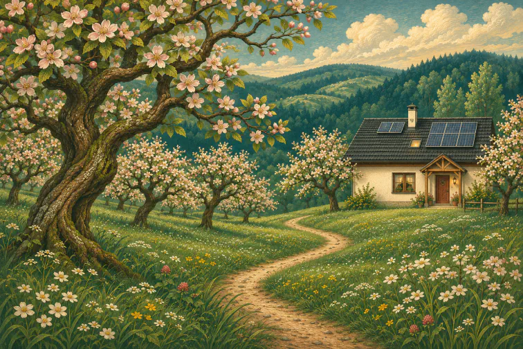
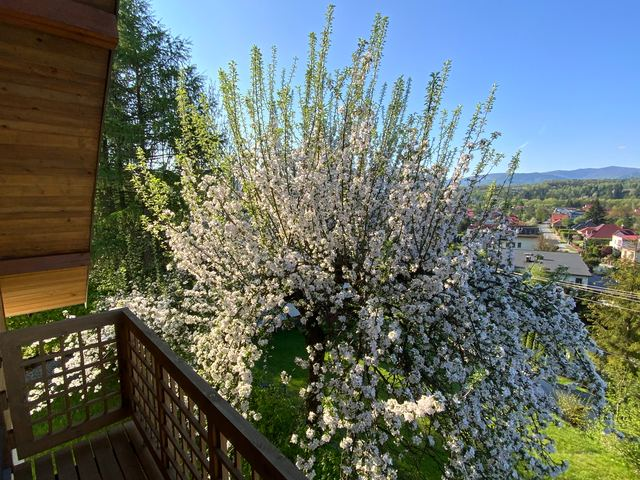

Rozdział I · Miejsce · wiosna
Dom wśród jabłoni


Jesteśmy niewielkim, rodzinnym przedsięwzięciem z urokliwego Makowa Podhalańskiego.
Z dala od ruchliwych dróg, w sadzie, stoi nasz dom. Z owoców tych drzew powstają nasze naturalne soki jabłkowe.